Introduction
At the beginning of the course, when we learned that we needed to choose a website for the crawler project, it was clear to us that we would choose a site dealing with tennis, as it's a topic loved by all group members. The initially chosen site was https://www.itftennis.com/en/. We chose it because it looked up-to-date, organized, and mainly because we saw that it lacked information on which we could make queries efficiently and, in addition to the experience of creating a crawler, we would also get added value from the site itself.
Therefore, we performed the first part of the project on this site, extracted interesting information and presented data in a convenient way that is not provided on the site, thus creating the following site: https://sharonmor.github.io/Query-Kings---A/
As the course progressed, we realized that the main essence of a crawler, dynamically searching pages on a site, was missed in the first part of the project and that it was not possible to continue working on the site we chose because searching in it returns very poor results, so poor that they are not even pages on the site but actual pdf files that can be downloaded:
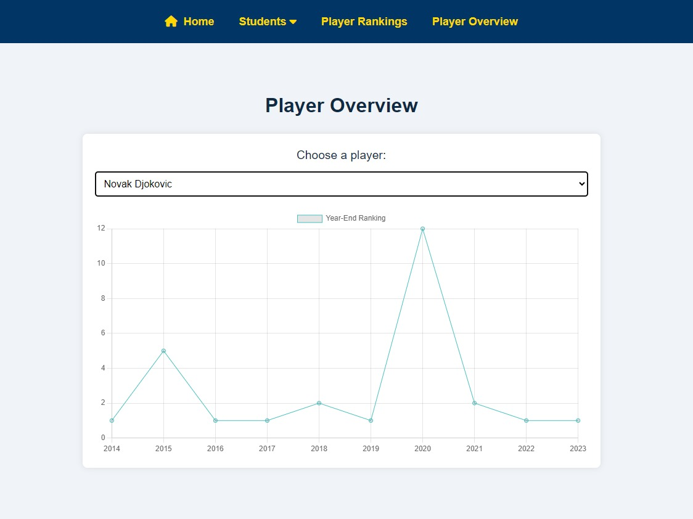 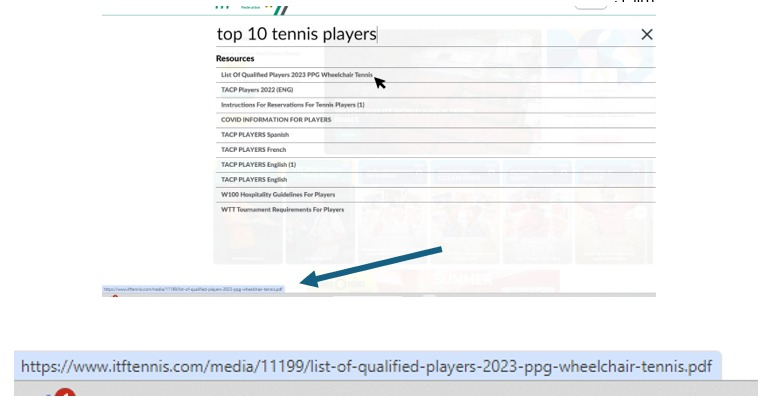Finally, it was decided to change the site on which we will perform the search and we chose www.espn.com because it contains all the things we were looking for and it's also easy to perform a search on it and therefore provides fertile ground for a crawler.
1. Website Information
The site we chose is ESPN.
Link to the chosen site: https://www.espn.com/
ESPN is a leading media company specializing in providing comprehensive sports content across various platforms. The site offers a wide range of services to users in major sports such as football, basketball, baseball, tennis, and more. Users can access live game score updates, read in-depth articles, watch top clips, view statistics data for teams and players, and more.
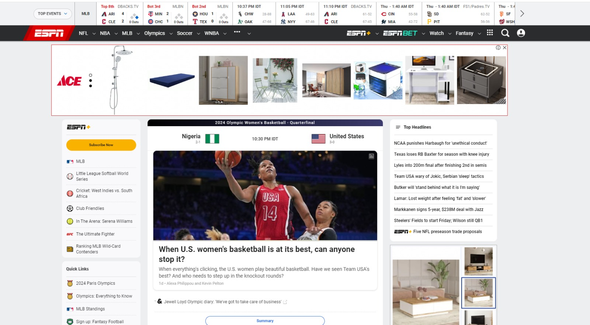2. Interesting Queries
The main query we wanted to explore is to get and display the best tennis players in the world - 'top tennis men ranking'. We explored this query from several angles, we saw that the site does not display the information sufficiently and we were interested to know how much the site, ESPN, puts this query at the center, we were interested in whether the search results of this query would be satisfactory for us and whether for others. Around this query, we chose two additional queries: tennis competition, best men tennis players, to understand again the full picture and the site's approach to the different content of the query.
3. Crawler
Crawler code: https://github.com/SharonMor/Query-Kings---A/blob/main/HW2/HW2.js
Here's an example of the main function in our crawler:
async function main() {
const browser = await puppeteer.launch({ headless: false });
const page = await browser.newPage();
await page.setViewport({ width: 1366, height: 768 });
await page.setUserAgent('Mozilla/5.0 (Windows NT 10.0; Win64; x64) AppleWebKit/537.36 (KHTML, like Gecko) Chrome/91.0.4472.124 Safari/537.36');
page.on('console', msg => console.log('PAGE LOG:', msg.text()));
const workbook = new ExcelJS.Workbook();
for (const [index, queryObj] of queries.entries()) {
const { query, words } = queryObj;
console.log(`Processing query ${index + 1}: "${query}"`);
searchQuery = query;
queryWords = words;
const texts = [];
try {
console.log("Navigating to the website and performing search...");
await takeScreenshot(page, `before-search-${index}`);
const articleUrls = await searchAndGetArticleUrls(page, searchQuery);
await takeScreenshot(page, `after-search-${index}`);
if (articleUrls.length === 0) {
console.log("No article URLs found. Skipping to next query.");
continue;
}
for (const url of articleUrls) {
try {
const articleContent = await scrapeArticle(page, url);
texts.push(articleContent);
console.log(`Successfully scraped article: ${url}`);
} catch (error) {
console.error(`Error scraping article ${url}:`, error);
}
await delay(2000);
}
const { wordCounts, urlWordCounts } = createWordCounts(texts);
const sheetPrefix = `Q${index + 1}_`;
createWordCountSheet(workbook, wordCounts, `${sheetPrefix}Word Counts`);
createInvertedIndexSheet(workbook, wordCounts, urlWordCounts, articleUrls, `${sheetPrefix}Inverted Index`);
createTFIDFSheet(workbook, urlWordCounts, articleUrls, `${sheetPrefix}TF-IDF`);
} catch (error) {
console.error(`An error occurred for query "${query}":`, error);
await takeScreenshot(page, `error-${index}`);
}
}
await browser.close();
try {
await workbook.xlsx.writeFile('ESPNTennisArticlesNew.xlsx');
console.log('Excel file created: ESPNTennisArticlesNew.xlsx');
} catch (error) {
console.error("Error writing Excel file:", error.message);
}
}
main().catch(console.error);
4. Technologies Used
- Puppeteer for visiting pages and extracting relevant information
- Javascript as the runtime language
- NodeJs as the runtime environment for JS
- ExcelJS library for creating and editing Excel files
5. Query Execution Time
The total queries took 7 minutes and 40 seconds, meaning each query took Puppeteer about 2 minutes and 33 seconds. The long time is due to the fact that we did not emphasize complexity and runtime, we gave a lot of "extra" times in which we waited several seconds for pages to load and conducted several loops that we believe can be improved.
We believe that the runtime can be improved with the use of other technologies, we chose to use puppeteer on JS and this is not the ideal tool for runtimes. In addition, opening the pages in a parallel manner will greatly shorten the runtime.
6. Inverted Index
Inverted index for the first query, each column is another page. Words on the first column are 15 most commonly used words + query words
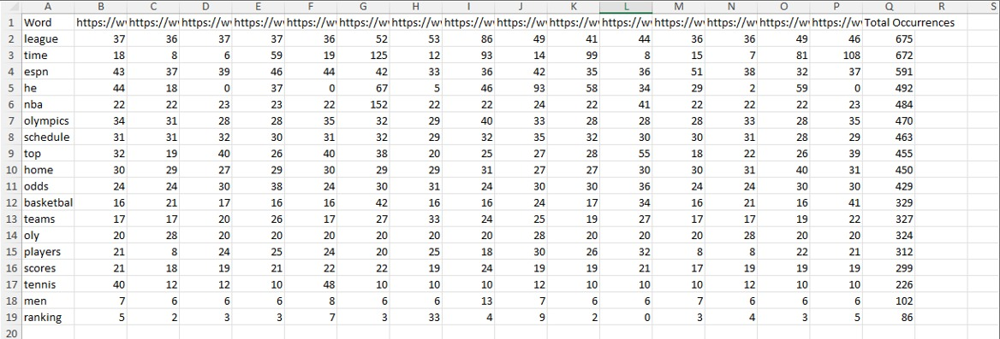7. TF-IDF Calculation
For the first query, we performed tfidf for each page. We calculated the results using a script during the crawler's run. Code for the script can be seen here: https://github.com/SharonMor/Query-Kings---A/blob/main/HW2/HW2.js
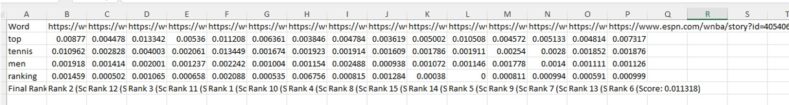Important note: In this query there were 2 words that appeared in all pages due to a common word (top) and a word that appeared in the menu, which appeared in each of the pages (tennis). As a result, we received that all the results that came back were 0 due to the calculation of the idf of the page:
Math.log((documents.length + 1) / (documentsWithWord + 1)) = Math.log(1) = 0
That is, TF * 0 = 0.
We didn't want all the results to be zeroed and we couldn't derive information from this, so we added 1 to each IDF result in order to give expression to the TF calculation of the QUERY word and thus derive a certain direction for each word in any case. We found the idea of adding the one in stackoverflow:
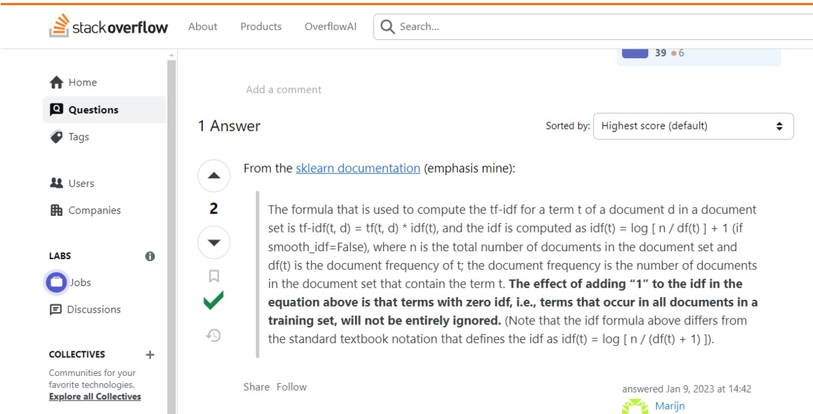After results we saw that the 2 results with the highest score are also the most relevant.
9. PageRank Calculation
We performed a Page rank calculation for the 10 pages returned from the query: top 10 tennis men ranking. We performed the calculation manually - we went through each page (from the left column) and saw which other page it refers to. A matrix of the 10 pages (attached link to each letter representing a certain page) that were returned is presented here where a red square represents that there is no reference to another page and a green square represents that there is a reference to another page, a black square is not relevant (self-reference).
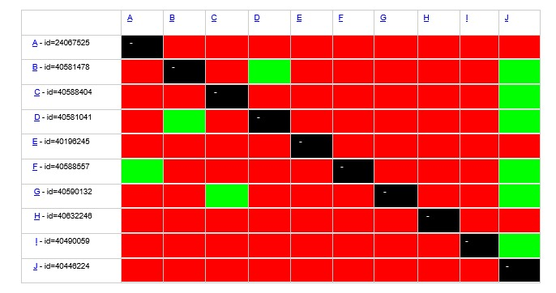Attached is a table with values in which the pageRank ranking was calculated in each iteration (a total of 4 iterations)
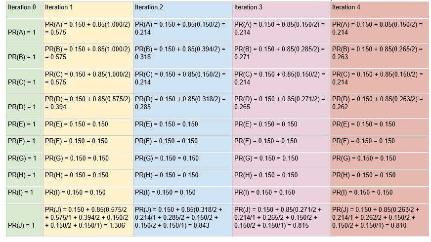The formula we used to calculate the page rank is:
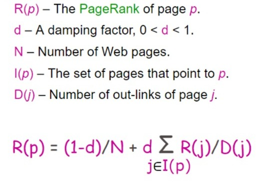where d factor is 0.85 in our case.
You can see that J has the highest PageRank when J is the page Ranking the top 100 professional athletes since 2000
That is, many links access it (you can also see in the matrix attached initially, that in column J there are many green squares, which shows that many pages have links to this page).
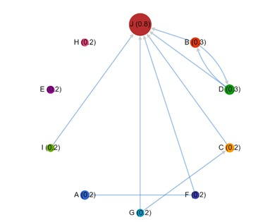Attached is a graph describing the connectivity between the 10 pages returned from the query.
Final results in order of ranking:
- Ranking of J: 0.81
- Ranking of B: 0.263
- Ranking of D: 0.262
- Ranking of A: 0.214
- Ranking of C: 0.214
- Ranking of E: 0.15
- Ranking of F: 0.15
- Ranking of G: 0.15
- Ranking of H: 0.15
- Ranking of I: 0.15
10. Relevance Feedback
User 1: Chose that the relevant pages are - B,D,J
User 2: Chose that the relevant pages are - B
B- Ranking the top 10 men's tennis players of the 21st century
D- Ranking the top 10 women's tennis players of the 21st century
J- Ranking the top 100 professional athletes since 2000
For the original query top 10 tennis men ranking we get:
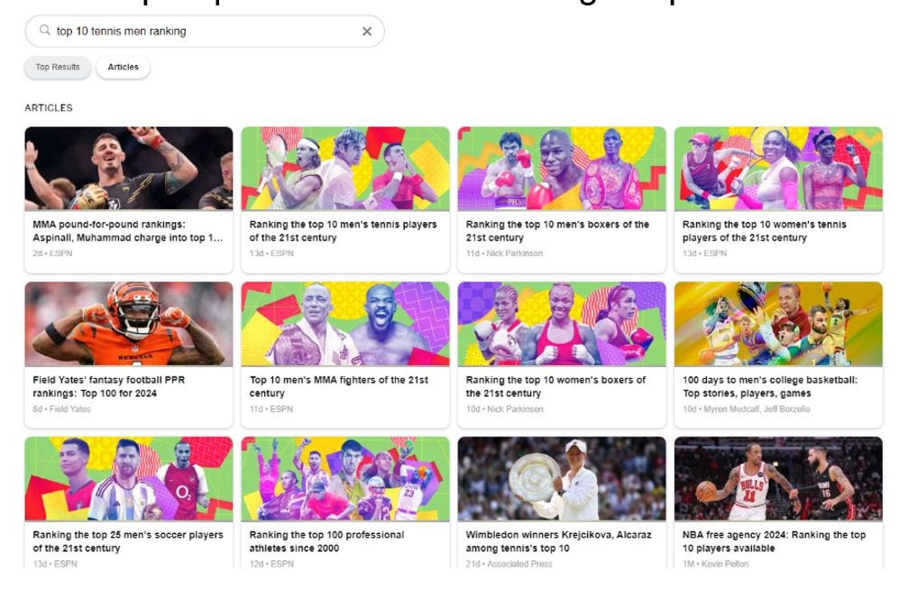New query: best 10 men's tennis ranking
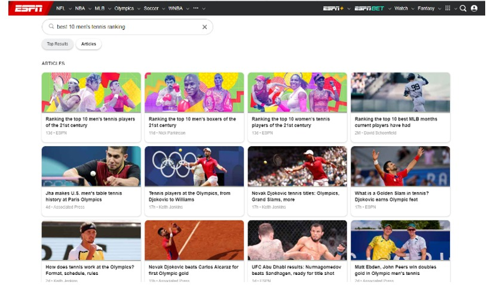You can see that by changing the query, we get results that are more relevant to what the user is looking for.
Precision and Recall Calculation
A total of about 50 pages were returned from this query.
The documents we found to be relevant:
- Ranking the top 10 men's tennis players of the 21st century
- Ranking the top 100 professional athletes since 2000
- ESPN's top athletes of the 21st Century: Every sport ranking
That is, 3 relevant documents out of 50 documents in total.
Let's look at the first 10 pages that came back. Out of the first 10 pages that came back, 2 of them are relevant.
Therefore we will get according to the calculation:
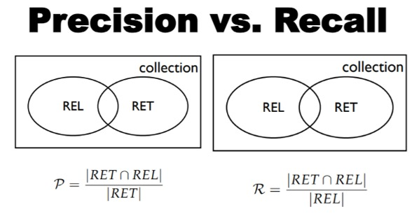|RET inter ReL| = 2
|RET| = 10
|REL| = 3
Precision = 2/10
Recall = 2/3